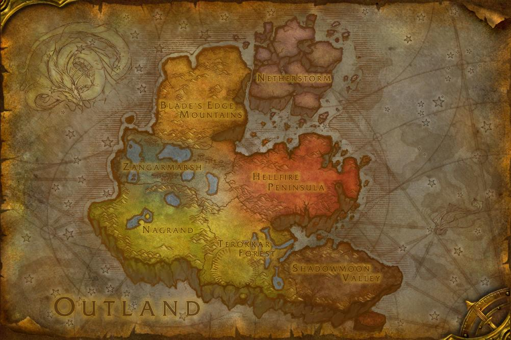

The Dark Portal is opened and the citizens of Azeroth enter a whole new
world
Whats new?
The Dark Portal is opened exposing level 60 players to a new region, The
Outlands. The Outlands consists of 7 regions (Hellfire Pennisula,
Zangarmarsh, Nagrand, Terokkar Forest, Shadowmoon Valley, Blade's Edge
Mountain, and Netherstorm). Players can advance to level 70.
New Races
Blood Elves (Horde)
Draenei (Alliance)
Classes
In this expansion there are no new classes, however Blood
Elves can now play the paladin class (originally Alliance only) and
Draenei can play the Shaman class
The Outlands

Lore
The Dark Portal
At the end of the original game the Dark Portal was opened by Lord
Kazzak. Lord Kazzak opened the portal to the Outlands to join forces with
Illidan Stormrage (who has taken demon blood to infiltrate their forces and
destroy the legion) and his two partners Lady Vashj (Queen of the Naga) and Kael'thas
Sunstrider (Blood Elf ruler). Unfortunately for Lord Kazzak and the rest of
the Burning Legion the citizens of Azeroth followed the demons into the
Outlands.
The Draenei Comes to Azeroth
When Illidan and his army came to Outlands, the draenei were lesss than
happy. Illidan took some of the Draenei and mutated them to be apart of his
army, however the rest of the Draenei decided to flee. They took the Exodar
which was part of a Naaru ship and crash landed in Azeroth. Once in Azeroth
the Draenei pledged their allegiance to the Alliance. The reason they chose
the Alliance over the Horde is because of bad blood between the Draenei and
the Orcs. Back on their homeworld Draenor the Orcs killed many Draenei.
The Blood Elves
Before Outlands the Blood Elves were members of the Alliance, however
after the Draenei exposed what some Blood Elves and their leader, Kael'thas
Sunstrider, were doing the Blood Elves were ostrasized from the Horde. The
Blood Elves decided to take up arms with the Horde. However, even there they
were viewed with suspicion by all but the Undead. Lady Sylvana's (Queen of
the Undead) embraced them because she used to be their high elven queen.
What awaits in Outlands
Illidan has been wreaking havoc in the Outlands, he has been rallying an
amry of demon hunters, fel orcs (Orcs who were left behind in the exodus
from Draenor to Azeroth), and enslaved Broken (Draenei who were left behind
when the others escaped to Azeroth).
Raids
Karazhan: Once home to Medivh, The Last Guardian, Karazhan has become
the home of some new malicious forces, the Black Riders of Deadwing. The
Black Riders wish to obtain the Scythe of Elune which will allow them to
summon vile Worgen into the world. Azeroth needs its bravest fighters to
stop the Black Riders before it is too late.
Zul'aman: Zul'Aman was a troll empire a long time ago, but was
defeated by the high elves and the humans. Ever since this the remaining
Trolls have been vengeful and wish to reclaim their kingdom. The Trolls
plan a complete takeover, they must be stopped to preserve both the
Alliance and the Horde.
Gruul's Lair: Gruul the Dragonkiller, is the overlord who rules over
the Blade's Edge Mountains. As members of Azeroth enter the Outlands, he
must be defeated if they wish to conquer this land.
Magtheridon's Lair: In the Outlands in Hellfire Penisula lies the
headquaters of the Fel Orcs, Hellfire Citadel. Magtheridon's lair is
just a part of the Citadel, but this part as all the rest needs to be
conquered if the fel orcs are to be stopped.
Serpentshrine Cavern: This is the lair of Lady Vashj. As one of
Illidan's main generals she needs to be stopped. Citizens of Azeroth
must fight through her minions to get to her and defeat her.
The Eye (Tempest Keep): Tempest keep is a former Naaru fortress, but
is now ruled by Illidan's other second in command Kael'thas Sunstrider.
To defeat Illidan Kael'thas too must be defeated.
The Battle of Mount Hyjal: Hyjal is the site of the Night Elves first
world tree, Nordrassil. Through the Caverns of Time players can relieve
this epic battle from Warcraft history.
The Black Temple: The Black Temple is the lair of Illidan Stormrage.
The Betrayer must be defeated. Fight through all of his minions, reach
Illidan and defeat him and restore order to the Outlands
Sunwell Plateau: Located on the Isle of Quel'Danas north of Silvermoon
City players will navigate the Sunwell Plateau to defeat Kil'jaeden, the
current leader of the Burning Legion. Kil'jaeden resides inside the
Sunwell itself where Kael'thas attempted to resurrect him.